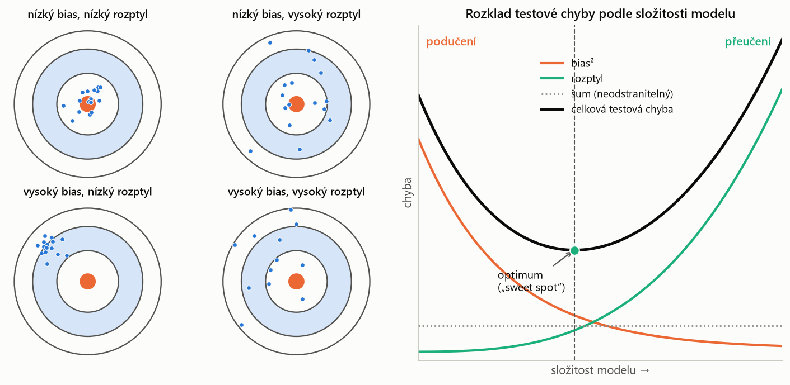
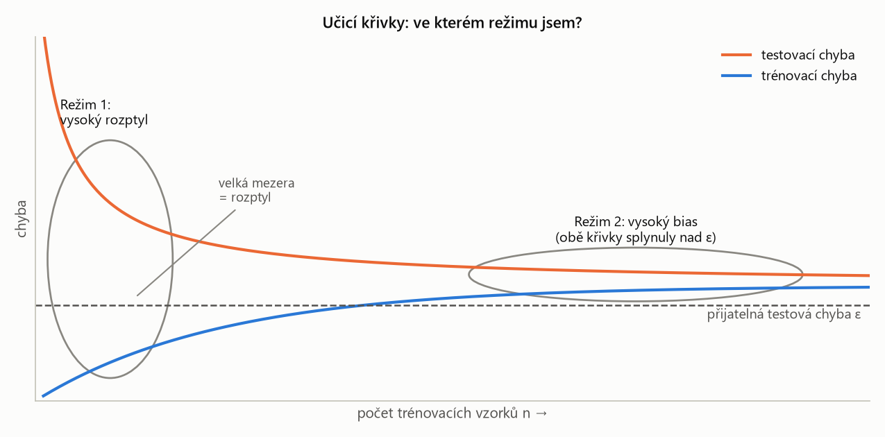
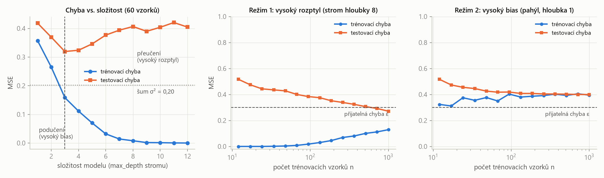
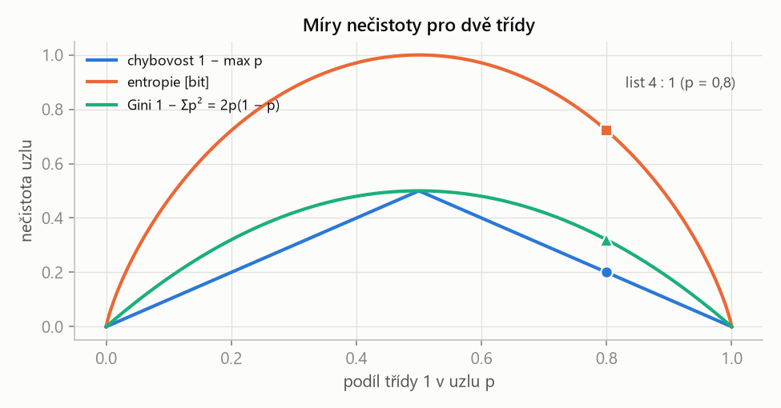
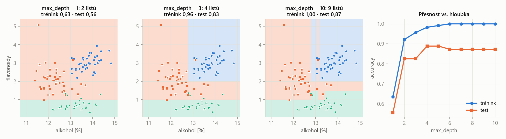
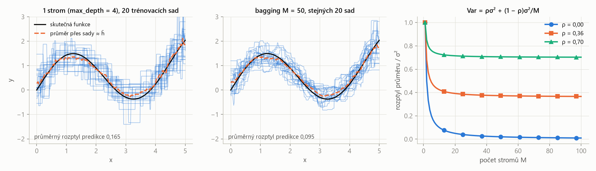
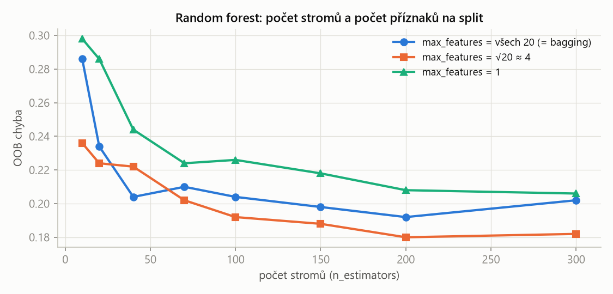
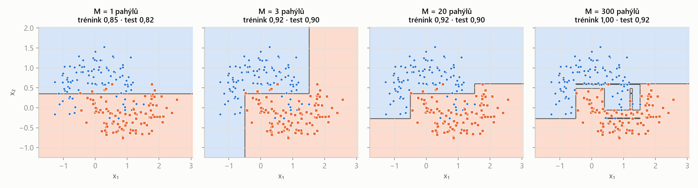

MLR – příprava na zkoušku · Rozhodovací stromy a ansámbly – MLR · https://balnerm.github.io/pripravy/mlr/06_stromy.html
Přednáška 6
Rozhodovací stromy a ansámbly
Posloupnost otázek ano/ne je model – a to takový, který přečte každý. Jeden strom je ale nestabilní: malá změna dat přepíše celý strom. Kapitola nejdřív rozloží testovou chybu na bias, rozptyl a šum (dva z nich ovlivníme), pak ukáže, jak se strom staví (CART), a jak z mnoha stromů složit silnější model: bagging a random forest snižují rozptyl, boosting snižuje bias.
Bias, rozptyl a šum
Trénovací množina \(T = \{(\mathbf x_1, y_1), \dots, (\mathbf x_n, y_n)\}\) je náhodný výběr z rozdělení \(P(X, Y)\); algoritmus \(\mathcal A\) z ní vyrobí model \(h_T = \mathcal A(T)\). Očekávaný label \(\bar y(\mathbf x) = \mathbb E_{y\mid\mathbf x}[Y]\) je nejlepší možná predikce v bodě \(\mathbf x\). Očekávaný model \(\bar h = \mathbb E_{T\sim P^n}[h_T]\) je průměr modelů, které by algoritmus vyrobil ze všech možných trénovacích množin.
\(\bar y\) je „pravda bez šumu“, \(\bar h\) je to, co náš algoritmus „v průměru umí“. Kdybychom měli nekonečně mnoho trénovacích sad, zprůměrovali bychom z nich naučené modely a dostali \(\bar h\).
| rozptyl (variance) | jak moc se model změní, když změníme trénovací data |
| bias² | jak daleko je průměrný model od nejlepší možné predikce (systematická chyba algoritmu) |
| šum (noise) | neodstranitelná chyba dat – žádný algoritmus ani víc dat ji neodstraní |
Odvození: dvakrát „přičti a odečti“ – nejdřív \(\bar h(\mathbf x)\), pak \(\bar y(\mathbf x)\) – a roznásob \((a + b)^2 = a^2 + 2ab + b^2\). Smíšené členy vypadnou: první proto, že \(\mathbb E_T[h_T(\mathbf x)] = \bar h(\mathbf x)\), druhý proto, že \(\mathbb E_{y\mid\mathbf x}[y] = \bar y(\mathbf x)\).
Kompromis bias–rozptyl je jev, že zvyšováním složitosti modelu obvykle klesá bias a roste rozptyl. Podučení (underfitting) = model je příliš jednoduchý, má vysoký bias (velká chyba už na trénovacích datech). Přeučení (overfitting) = model je příliš složitý, má vysoký rozptyl (nízká trénovací, ale vysoká testová chyba – naučil se šum).
jednoduchý model „netrefí tvar“, ale je stabilní; složitý model tvar trefí, ale „poskakuje“ podle toho, jaká data zrovna dostal. Optimum je uprostřed. Šum je podlaha, pod kterou se nedostaneme.
Bias a rozptyl vizuálně

Terče. Bias = jak daleko je střed shluku teček (průměrný model \(\bar h\)) od středu terče – je to systematická chyba, která nezmizí, ani když modelů zprůměrujeme nekonečně mnoho. Rozptyl = jak moc jsou tečky rozházené kolem svého středu – jak citlivě model reaguje na to, jaká data zrovna dostal. Nízký bias i rozptyl (vlevo nahoře) je cíl. Vysoký bias s nízkým rozptylem (vlevo dole) je typický podučený model – např. přímka na zakřivená data: pokaždé skoro stejná, pokaždé stejně vedle. Nízký bias s vysokým rozptylem (vpravo nahoře) je typický přeučený model – např. hluboký strom: v průměru trefí, ale každá trénovací množina dá úplně jiný model. Šum v obrázku není – ten by „rozmazal“ i samotný střed terče.
Křivky. Se složitostí modelu (hloubka stromu, stupeň polynomu, malé \(k\) u k-NN, velké \(C\) u SVM…) bias² klesá (model umí vyjádřit složitější tvar) a rozptyl roste (model má víc volnosti přizpůsobit se šumu). Celková testová chyba je jejich součet plus šum, a proto má tvar „U“: nalevo dominuje bias (podučení), napravo rozptyl (přeučení). Minimum („sweet spot“) je tam, kde se zlepšení biasu vyrovná zhoršení rozptylu – hledáme ho validací. Šum je vodorovná podlaha, pod kterou se celková chyba nedostane žádným modelem.

S rostoucím počtem vzorků trénovací chyba roste (víc bodů se hůř „zapamatuje“) a testovací klesá (víc dat = lepší odhad); obě se blíží ke stejné hodnotě. Režim 1 – vysoký rozptyl (vlevo): trénovací chyba je pod \(\varepsilon\), testovací nad ním a mezi nimi je velká mezera; mezera je právě rozptyl. Testovací křivka ještě klesá, takže víc dat pomůže, stejně jako jednodušší model nebo bagging. Režim 2 – vysoký bias (vpravo): obě křivky už splynuly, ale nad \(\varepsilon\). Další data nepomohou – křivky zkonvergovaly na špatné místo; je potřeba složitější model, víc příznaků nebo boosting. U zkoušky: „nejdřív se podívám na učicí křivky, abych věděl, kterým směrem model měnit.“
| režim 1: vysoký rozptyl | režim 2: vysoký bias | |
|---|---|---|
| jak poznat | trénovací chyba ≪ testovací; trénovací < \(\varepsilon\), testovací > \(\varepsilon\) | trénovací chyba > \(\varepsilon\) a testovací je blízko ní |
| co pomůže | víc trénovacích dat; jednodušší model; bagging | složitější model; víc příznaků; boosting |
Přijatelná chyba \(\varepsilon\) je daná aplikací, ne daty. Oba režimy potřebují opačnou léčbu, proto nejdřív zjisti, ve kterém jsi.
Totéž na skutečně spočítaných datech

Schémata z obr. 6.1 a 6.2 platí i na skutečném výpočtu. Vlevo: trénovací chyba s hloubkou klesá k nule, testovací má minimum (hloubka 3) a nikdy neklesne pod šum 0,20. Uprostřed (strom hloubky 8): velká mezera, testovací chyba s daty klesá pod \(\varepsilon\) – režim 1, víc dat pomohlo. Vpravo (pahýl): obě křivky splynou kolem 0,40 nad \(\varepsilon\) – režim 2, ani 1000 vzorků nepomůže.
Rozhodovací stromy
Rozhodovací strom je model, který vzorek klasifikuje (nebo předpoví hodnotu) průchodem od kořene k listu: každý vnitřní uzel položí jednu binární otázku o jednom příznaku (např. \(x_1 \gt \frac14\)), větev je odpověď a list (koncový uzel) nese výslednou třídu nebo hodnotu. Velikost stromu je počet uzlů (dělení), hloubka je délka nejdelší cesty od kořene k listu. Strom s jediným uzlem je pahýl (stump).
„dvacet otázek“: Má srst? Má čtyři nohy? … Predikce stojí tolik otázek, kolik je hloubka stromu – nezávisí na počtu trénovacích vzorků.
CART
CART (Classification And Regression Trees, Breiman a kol. 1984) je algoritmus, který strom staví rekurzivním binárním dělením: v každém uzlu zvolí jeden příznak \(j\) a práh \(s\), které nejvíce sníží nečistotu (chybu) dvou vzniklých oblastí; prostor příznaků tak rozdělí na osově rovnoběžné obdélníky. Je určen třemi pravidly: kritériem dělení, pravidlem zastavení a pravidlem přiřazení hodnoty listu (většinová třída, resp. průměr).
„najdi otázku, která data rozdělí nejčistěji, a opakuj to v každé půlce“.
| \(j, s\) | příznak a práh – minimalizuje se přes obojí |
| \(R_k, R_k^C\) | dvě doplňkové oblasti vzniklé dělením \(k\)-tého uzlu |
| \(\hat y_R\) | většinová třída oblasti (hodnota listu) |
| \(I(\cdot)\) | indikátor – počítá chybně zařazené body |
V praxi se místo počtu chyb používá Gini nebo entropie (viz níže). U regrese je kritériem součet čtverců \(\sum_{i\in R}(y_i - \hat y_R)^2\) a hodnotou listu průměr – model je po částech konstantní („schody“).
- Pro každou oblast spočítej nejlepší dělení – projdi příznaky \(j\) a prahy \(s\) (hrubou silou nebo pomocí histogramů).
- Vezmi nejlepší oblast (s nejnižší chybou) a rozděl ji podle tohoto příznaku a prahu na dvě podoblasti.
- Opakuj pro každou novou podoblast, dokud nezasáhne pravidlo zastavení.
„Hladové“, protože každé dělení je lokálně nejlepší a nevrací se; hledat globálně nejlepší strom by bylo kombinatoricky neúnosné. V příkladu z přednášky (19 bodů) pět dělení sníží počet chyb 9 → 6 → 5 → 4 → 3 → 1 a součet \(\sum_R n_RG_R\) z 9,47 na 1,60; poslední list (4 : 1) zůstane nečistý, protože růst zastaví max_depth = 3.
Pro podíly tříd \(p_R(y)\) v oblasti \(R\): chybovost \(1 - \max_yp_R(y)\); entropie \(H_R = -\sum_y p_R(y)\log p_R(y)\); Giniho nečistota \(G_R = \sum_y p_R(y)(1 - p_R(y)) = 1 - \sum_y p_R(y)^2\). Všechny jsou nulové pro čistý uzel (jediná třída) a maximální pro rovnoměrné zastoupení tříd.
„jak moc je uzel promíchaný“. Gini a entropie jsou hladké a ostře konkávní, takže odmění i dělení, které počet chyb nezmění, ale udělá jeden z uzlů čistším – proto se v praxi preferují.
List 4 : 1 (\(p = 0{,}8\)): chyba 1 (chybovost 0,2); \(H = -0{,}8\log_20{,}8 - 0{,}2\log_20{,}2 = 0{,}72\) bitu; \(G = 0{,}8\cdot0{,}2 + 0{,}2\cdot0{,}8 = 0{,}32\). Kořen 10 : 9: \(H = 1{,}00\) bit, \(G = 0{,}50\). Čistý list: všechny tři nulové.

Všechny tři míry jsou nulové na krajích (čistý uzel) a maximální při \(p = 0{,}5\). Chybovost je po částech lineární – mnoho dělení má stejné skóre. Entropie a Gini jsou zakřivené, takže rozliší „čistší“ dělení i při stejném počtu chyb.
Kdy přestat dělit
- v oblasti je jediný bod; dělit jen pokud je v oblasti víc než \(n_{\min}\) bodů;
- oblast obsahuje body jediné třídy;
- dosažena maximální hloubka stromu nebo maximální počet dělení (velikost).
Bez pravidel roste strom, dokud není každý list čistý – na datech vína (115 trénovacích, 63 testovacích bodů) roste trénovací přesnost do 1,00, testovací má vrchol v hloubce 2 (0,87) a končí na 0,83 (přednáška). Alternativou zastavování je prořezávání (pruning): nechat strom vyrůst celý a pak odříznout větve, které nezlepší validační chybu.

Strom dělí prostor osově rovnoběžnými obdélníky. Hloubka 1 (pahýl) umí jen jeden řez – dvě třídy z tří (podučení). Hloubka 3 zachytí strukturu. Hloubka 10 vyrobí úzké pruhy kolem jednotlivých bodů: trénovací přesnost 1,00, testovací už neroste. Trénovací přesnost s hloubkou roste vždy, testovací se zastaví a může klesnout.
| parametr | co znamená | ↑ když ho zvětším | ↓ když ho zmenším |
|---|---|---|---|
max_depth | maximální hloubka (počet otázek na cestě) | složitější strom, jemnější obdélníky, trénovací chyba → 0, vysoký rozptyl (přeučení) | jednodušší strom, vyšší bias; hloubka 1 = pahýl (podučení) |
min_samples_leaf | minimální počet vzorků v listu | větší, „průměrnější“ listy, hladší model, méně přeučení | listy i s jedním bodem – strom kopíruje šum |
min_samples_split (\(n_{\min}\)) | kolik bodů musí uzel mít, aby se smel dělit | dřívější zastavení, menší strom | dělí se i malé uzly |
max_leaf_nodes / počet dělení | velikost stromu | složitější model | jednodušší model |
criterion | Gini / entropie (klasifikace), MSE (regrese) | Gini a entropie dávají obvykle velmi podobné stromy; chybovost se pro růst nepoužívá | |
ccp_alpha (prořezávání) | cena za každý list při prořezávání | agresivnější prořezání, menší strom | strom zůstane skoro celý |
hloubku a velikost listu ladit v CV. Škálování příznaků strom nepotřebuje.
| výhody CART | nevýhody CART |
|---|---|
| jednoduchý a intuitivní, čitelný; zvládne číselné i kategorické příznaky; minimální předzpracování (nezávisí na škálování – není potřeba normalizace); zvládne chybějící hodnoty (náhradní, surrogate dělení); nevadí mu korelované příznaky | nestabilita – malá změna dat přepíše celý strom (lék: bagging, random forest); přeučení hlubokých stromů (lék: pravidla zastavení, prořezávání, bagging, random forest) |
Ansámbly a bagging
Ansámblová metoda kombinuje mnoho základních modelů (zde stromů) do jednoho silnějšího: bagging prostým průměrem, boosting (AdaBoost) váženým průměrem; dále mnoho variant (LPBoost, RUSBoost, RobustBoost, XGBoost…).
„moudrost davu“. Bagging útočí na rozptyl, boosting na bias.
Bootstrap výběr je náhodný výběr \(n'\) vzorků z trénovací množiny s vracením (obvykle \(n' = n\)), takže některé vzorky jsou v něm víckrát a jiné vůbec. Bagging (bootstrap aggregation) natrénuje \(M\) modelů na \(M\) bootstrap výběrech a jejich predikce zprůměruje: \(h_{\text{bagg}}(\mathbf x) = \frac1M\sum_{m=1}^Mh_{T_m}(\mathbf x)\) (u klasifikace většinové hlasování).
každý strom vidí trochu jiná data, a proto se trochu jinak plete; při průměrování se náhodné chyby jednotlivých stromů navzájem ruší. Bias zůstává (průměr podobně hlubokých stromů), klesá rozptyl.
| \(\sigma_1^2\) | rozptyl predikce jednoho stromu (přes trénovací množiny) |
| \(M\) | počet stromů v průměru |
| \(\rho\) | korelace mezi stromy – stromy sdílejí stejná data, takže nejsou nezávislé |
S rostoucím \(M\) druhý člen mizí, ale první \(\rho\sigma_1^2\) zůstává – rozptyl neklesne pod \(\rho\sigma_1^2\). V přednášce: z jednoho bootstrap stromu na \(M = 50\) klesl rozptyl predikce z 0,00465 na 0,00175 – 2,7×, ne 50×. (Dosazením vychází \(\rho \approx 0{,}36\).) Proto random forest stromy navíc „dekoreluje“.

Jeden strom „skáče“ podle toho, jaká data dostal (průměrný rozptyl predikce 0,165); bagged predikce stejných 20 sad jsou mnohem těsněji u sebe (0,095) a hladší. Průměr přes sady (\(\approx\bar h\)) je u obou podobný – bagging bias nemění. Vpravo: čím víc jsou stromy korelované, tím dřív se pokles rozptylu zastaví.
Random forest
Random forest je bagging rozhodovacích stromů s jedním zdrojem náhody navíc: při každém dělení uzlu smí strom vybírat jen z náhodné podmnožiny příznaků. Má tedy dva nezávislé zdroje náhodnosti – které vzorky strom vidí (bootstrap) a které příznaky smí každé dělení použít.
kdyby jeden příznak byl velmi silný, všechny bagged stromy by se ptaly hlavně na něj a byly by si podobné (vysoké \(\rho\)). Náhodný výběr příznaků je donutí být různorodé, stromy jsou méně korelované, a proto se průměrování víc vyplatí.
Out-of-bag vzorky stromu jsou trénovací vzorky, které se do jeho bootstrap výběru nedostaly (ostatní jsou in-bag); slouží jako validační data. OOB skóre vzorku se počítá jen ze stromů, pro které je tento vzorek OOB.
bootstrap velikosti \(n\) vynechá každý vzorek s pravděpodobností \((1 - 1/n)^n \to e^{-1} \approx 37\,\%\) (pro \(n = 10\): 0,35; \(n = 100\): 0,366) – odtud pravidlo „2/3 in-bag, 1/3 OOB“. Dostaneme tak odhad testové chyby bez křížové validace – užitečné u malých dat. Každý vzorek ale hodnotí jen ≈ 1/3 stromů, takže OOB skóre bývá mírně pesimistické; nemíchat OOB a validační skóre při porovnání modelů.

max_features.S počtem stromů chyba klesá a pak se ustálí – víc stromů už nepřeučí, jen stojí víc výpočtu. max_features = všechny příznaky je obyčejný bagging (korelované stromy); √d (≈ 4) dává nejnižší chybu; 1 příznak na dělení stromy příliš oslabí (každé dělení je skoro náhodné, vyšší bias).
| parametr | co znamená | ↑ když ho zvětším | ↓ když ho zmenším |
|---|---|---|---|
počet stromů \(M\) (n_estimators) | kolik stromů se průměruje | rozptyl klesá až k hranici \(\rho\sigma^2\), výsledek stabilnější; nepřeučí, jen roste výpočet a paměť | hlučnější predikce, vyšší rozptyl |
max_features | kolik náhodných příznaků smí každé dělení zvažovat | silnější, ale podobnější (korelované) stromy; = všechny ⇒ bagging | různorodější, méně korelované stromy (rozptyl ↓), ale každý slabší (bias ↑); typicky √d (klasifikace), d/3 (regrese) |
hloubka stromů (max_depth, min_samples_leaf) | složitost jednotlivých stromů | hluboké stromy = nízký bias, vysoký rozptyl, který průměrování srazí – obvyklá volba | mělké stromy = vyšší bias, který bagging neopraví |
| velikost bootstrapu \(n'\) | kolik vzorků dostane každý strom | stromy si víc podobné | stromy různorodější, každý slabší |
dost stromů (stovky), max_features ladit (√d jako start), stromy nechat hluboké; OOB skóre jako levná validace.
| výhody random forestu | nevýhody |
|---|---|
| většina výhod CART (bez škálování, smíšené typy příznaků); vhodný i pro malá data (OOB); vyšší výkon než jeden strom, srovnatelný s nejlepšími standardními metodami; odhad testové chyby bez CV (OOB); spolehlivý odhad důležitosti příznaků; snadno paralelizovatelný; stabilní, brání přeučení | méně interpretovatelný než jeden strom; mnoho hlubokých stromů = velká výpočetní a paměťová náročnost při trénování i predikci; na zašuměných a regresních datech může přeučit |
Adaptivní boosting (AdaBoost)
AdaBoost je ansámblová metoda, která trénuje slabé klasifikátory \(h_m\) postupně, každý na převážených datech (chybně klasifikované vzorky dostanou vyšší váhu), a výsledek je jejich váženým hlasováním: \(H(\mathbf x) = \operatorname{sign}\left(\sum_{m=1}^M\alpha_mh_m(\mathbf x)\right)\) pro třídy \(\pm1\).
každý další „slabý žák“ se soustředí na to, co předchozí pokazili, a lepší žák má ve finálním hlasování silnější hlas. Z mnoha jednoduchých (např. pahýlů) vznikne silný, složitý klasifikátor – boosting snižuje bias.
- Inicializuj váhy vzorků \(w_i^{(1)} = 1/n\).
- Najdi slabý klasifikátor \(h_m\) s nejmenší váženou chybou \(\epsilon_m = \sum_{i: h_m(\mathbf x_i)\ne y_i}w_i^{(m)}\).
- Spočítej jeho váhu \(\alpha_m = \frac12\ln\frac{1 - \epsilon_m}{\epsilon_m}\).
- Převáž vzorky: \(w_i^{(m+1)} = w_i^{(m)}e^{-\alpha_my_ih_m(\mathbf x_i)}/Z_m\), kde \(Z_m = \sum_iw_i^{(m)}e^{-\alpha_my_ih_m(\mathbf x_i)}\) normalizuje váhy na součet 1.
- Opakuj 2–4 pro všech \(M\) slabých klasifikátorů.
Správně zařazené (\(y_ih_m = +1\)) vzorky váhu ztratí (\(e^{-\alpha}\)), chybné ji získají (\(e^{+\alpha}\)). Při \(\epsilon_m = 0{,}5\) (náhoda) je \(\alpha_m = 0\) – klasifikátor nemá hlas; čím menší chyba, tím větší \(\alpha_m\).
- Všechny váhy 0,10. První pahýl splete 3 vzorky: \(\epsilon_1 = 3\cdot0{,}10 = 0{,}30\), \(\alpha_1 = \frac12\ln\frac{0{,}70}{0{,}30} = 0{,}42\). (Vlastní dopočet: \(Z_1 = 0{,}917\); správné vzorky dostanou váhu 0,071, chybné 0,167.)
- Druhý pahýl na převážených datech trefí tři „těžké“ modré a splete tři lehké červené: \(\epsilon_2 = 3\cdot0{,}07 = 0{,}21\), \(\alpha_2 = 0{,}65 \gt \alpha_1\).
- Třetí (vodorovný) splete tři ze čtyř nejlehčích vzorků (každý přesně 1/22): \(\epsilon_3 = 0{,}14\), \(\alpha_3 = 0{,}92\).
- \(H(\mathbf x) = \operatorname{sign}(0{,}42h_1 + 0{,}65h_2 + 0{,}92h_3)\) – tři osově rovnoběžné pahýly dají netriviální oblast, která správně zařadí všech 10 vzorků.

Jeden pahýl = jeden řez (vysoký bias). Každé kolo přidá řez tam, kde se dosud chybovalo – hranice je postupně složitější a bias klesá (test 0,82 → 0,90). Při 300 kolech trénovací přesnost dosáhne 1,00 díky úzkým „výběžkům“ kolem jednotlivých bodů. Šum v labelech (přednáška): tři chybně označené vzorky ze 80 začínají s 3,75 % celkové váhy a po 40 kolech drží 37 %; trénovací chyba je 0 díky proužkům užším než 0,01 kolem nich – AdaBoost je na chybné labely citlivý.
| parametr | co znamená | ↑ když ho zvětším | ↓ když ho zmenším |
|---|---|---|---|
počet kol \(M\) (n_estimators) | kolik slabých klasifikátorů se postupně přidá | bias ↓, složitější hranice; při šumu v labelech přeučení (váha se soustředí na chybné vzorky) | jednodušší model, vyšší bias (podučení) |
| typ / síla slabého klasifikátoru | např. pahýl (hloubka 1), mělký strom | silnější žák (hlubší strom) = rychlejší pokles chyby, ale snazší přeučení | pahýly = pomalý, ale bezpečný postup |
learning_rate (scikit-learn) | zmenšení vah \(\alpha_m\) každého žáka | rychlejší učení, méně kol stačí | pomalejší, potřeba víc kol, obvykle lépe zobecní |
málo hyperparametrů – hlavně počet kol a typ slabého klasifikátoru; počet kol ladit na validaci (early stopping).
| výhody AdaBoost | nevýhody |
|---|---|
| rychlý a jednoduchý; může kombinovat libovolné ML algoritmy i expertní rozhodnutí; málo hyperparametrů (počet kol, typ slabého klasifikátoru); rozšiřitelný na více tříd (AdaBoost.M2) | sklon k přeučení; citlivý na šum v labelech |
| bagging / random forest | boosting (AdaBoost) | |
|---|---|---|
| co snižuje | rozptyl | bias |
| základní modely | hluboké, nezávisle trénované stromy | slabé (pahýly), trénované postupně |
| kombinace | prostý průměr / hlasování | vážené hlasování (\(\alpha_m\)) |
| paralelizace | ano (stromy jsou nezávislé) | ne (každé kolo závisí na předchozím) |
| šum v labelech | odolný | citlivý |
Další stromové algoritmy a prořezávání
Informační zisk příznaku je rozdíl entropie cíle před dělením a vážené (očekávané) entropie po rozdělení podle hodnot příznaku. Algoritmus ID3 (Quinlan 1986) v každém uzlu dělí podle příznaku s největším informačním ziskem; pracuje jen s kategorickými příznaky. C4.5 / C5.0 je jeho modifikace i pro číselné příznaky.
„o kolik bitů nejistoty o cíli přijdu, když se zeptám na tento příznak“. Postup: celková informace → očekávaná informace pro každý příznak → zisk → dělit podle největšího → rekurzivně opakovat.
| zvíře | kůže | nohy | oči | roztomilé |
|---|---|---|---|---|
| kotě | srst | 4 | 2 | ano |
| had | šupiny | 0 | 2 | ne |
| pavouk | chitin | 8 | 8 | ne |
| zebra | srst | 4 | 2 | ne |
| kachna | peří | 2 | 2 | ne |
- Cíl = zvíře (5 tříd po jednom vzorku): \(H = \log_25 = 2{,}32\) bitu.
- Očekávaná informace po dělení podle nohou: {4: kotě, zebra}, {0}, {8}, {2} ⇒ \(\frac25\cdot1 + 0 + 0 + 0 = 0{,}40\) bitu; podle očí: {2: čtyři zvířata}, {8} ⇒ \(\frac45\cdot2 = 1{,}60\) bitu.
- Zisk: nohy 1,92; kůže 1,92; oči 0,72; roztomilé 0,72 bitu.
- Dělit podle nohou nebo kůže (remíza); pak opakovat ve větvi, která ještě míchá třídy ({kotě, zebra}).
Další algoritmy: CHAID (Chi-squared Automatic Interaction Detection), MARS (Multivariate Adaptive Regression Splines). Prořezávání: nejdřív nechat vyrůst celý strom a pak odříznout větve, které nezlepší validační chybu – alternativa k pravidlům zastavení.
„Očekávaná testová chyba se rozkládá na rozptyl – jak moc se model mění s trénovacími daty –, bias² – jak daleko je průměrný model od nejlepší predikce – a neodstranitelný šum. Velká mezera mezi trénovací a testovací chybou znamená vysoký rozptyl: pomůže víc dat, jednodušší model nebo bagging. Vysoká chyba i na tréninku znamená bias: pomůže složitější model, příznaky nebo boosting. CART staví strom hladově – v každém uzlu volí příznak a práh minimalizující Gini nebo entropii – a zastavuje podle hloubky nebo velikosti listu. Strom je čitelný, ale nestabilní. Bagging průměruje stromy z bootstrap výběrů a snižuje rozptyl, omezeně korelací stromů; random forest je dekoreluje náhodným výběrem příznaků na dělení a nabízí OOB odhad chyby. AdaBoost trénuje slabé klasifikátory postupně na převážených datech a váží je \(\alpha_m = \frac12\ln\frac{1-\epsilon_m}{\epsilon_m}\); snižuje bias, ale je citlivý na šum v labelech.“
Shrnutí
Testová chyba = rozptyl + bias² + šum; složitost modelu vyvažuje bias a rozptyl a učicí křivky ukážou, který převládá. Rozhodovací strom klade binární otázky o jednotlivých příznacích a dělí prostor na osově rovnoběžné obdélníky; CART ho staví hladově podle nečistoty (Gini, entropie; u regrese čtverce) a zastavuje podle hloubky, velikosti listu nebo čistoty, případně prořezává. Strom nepotřebuje škálování, ale je nestabilní a hluboký přeučí. Bagging průměruje stromy natrénované na bootstrap výběrech a snižuje rozptyl, ale jen do \(\rho\sigma^2\); random forest přidá náhodnou podmnožinu příznaků na dělení, čímž stromy dekoreluje, a OOB vzorky (≈ 37 %) dávají odhad chyby bez CV. AdaBoost postupně přidává slabé klasifikátory na převážených datech s vahami \(\alpha_m\), snižuje bias, ale přeučí se na chybných labelech. ID3 dělí podle informačního zisku.
Take-home messages
- Chyba = rozptyl + bias² + šum; šum neodstraníš.
- Velká mezera trénink–test = rozptyl (víc dat, jednodušší model, bagging); vysoká chyba všude = bias (složitější model, boosting).
- CART: hladové dělení podle Gini/entropie, osově rovnoběžné řezy, bez škálování.
- ↑max_depth a ↓min_samples_leaf = složitější strom = přeučení.
- Bagging snižuje rozptyl jen do \(\rho\sigma^2\) – RF dekoreluje stromy výběrem příznaků.
- Víc stromů v RF nepřeučí; OOB ≈ 1/3 dat jako validace zdarma.
- AdaBoost: \(\alpha_m = \frac12\ln\frac{1-\epsilon_m}{\epsilon_m}\), převáží chyby; citlivý na šum v labelech.
Otázky ke zkoušce
Napište rozklad očekávané testové chyby na bias, rozptyl a šum. Které členy ovlivníme a jak?
\(\mathbb E[(h_T(\mathbf x) - y)^2] = \mathbb E[(h_T - \bar h)^2] + \mathbb E[(\bar h - \bar y)^2] + \mathbb E[(\bar y - y)^2]\) = rozptyl + bias² + šum. \(\bar h\) je průměrný model přes trénovací množiny, \(\bar y\) očekávaný label. Smíšené členy vypadnou, protože \(\mathbb E_T[h_T] = \bar h\) a \(\mathbb E_{y|\mathbf x}[y] = \bar y\). Ovlivníme rozptyl (víc dat, jednodušší model, bagging, regularizace) a bias (složitější model, víc příznaků, boosting); šum ne.
Vidíte velkou mezeru mezi trénovací a testovou chybou. Který je to režim a co s tím? A když je trénovací chyba nad ε?
Velká mezera (trénovací < ε < testovací) = vysoký rozptyl: víc trénovacích dat, jednodušší model (menší hloubka, regularizace), bagging. Trénovací chyba nad ε a testová blízko ní = vysoký bias: víc dat nepomůže (křivky už zkonvergovaly na špatné hodnotě), je potřeba složitější model, víc příznaků nebo boosting.
Definujte uzel, list, větev, velikost a hloubku stromu. Co je pahýl? Napište kritérium dělení CART.
Uzel = binární otázka o jednom příznaku; list = koncový uzel s odpovědí; větev = odpověď na otázku; velikost = počet uzlů (dělení); hloubka = nejdelší cesta kořen–list; pahýl = strom s jediným uzlem. CART minimalizuje přes příznak \(j\) a práh \(s\) součet chyb (nečistot) obou vzniklých oblastí \(E_{R_k}(j,s) + E_{R_k^C}(j,s)\), \(R_k = \{x_{ij} \gt s\}\). Je hladový – volí lokálně nejlepší dělení a nevrací se; globálně optimální strom by byl kombinatoricky nedosažitelný.
Porovnejte chybovost, entropii a Gini. Spočítejte je pro list 4 : 1.
Chybovost \(1 - \max p\), entropie \(-\sum p\log_2p\), Gini \(\sum p(1-p)\); všechny 0 pro čistý uzel, maximum při rovnoměrném zastoupení. List 4 : 1: chybovost 0,2 (1 chyba), entropie 0,72 bitu, Gini 0,32. Gini a entropie jsou hladké a konkávní, takže ocení i dělení, které nezmění počet chyb, ale vytvoří čistší uzel – proto se pro růst preferují.
Jak se liší regresní strom od klasifikačního?
Kritérium dělení je součet čtverců odchylek od průměru oblasti místo nečistoty; hodnota listu je průměr \(y\) bodů v listu místo většinové třídy; výsledná funkce je po částech konstantní („schody“).
Co je bootstrap? Proč by průměr M stromů měl snížit rozptyl M-krát a proč v praxi jen 2–3×?
Bootstrap = výběr \(n\) vzorků s vracením. Rozptyl průměru \(M\) nezávislých veličin je \(\sigma^2/M\). Stromy z bootstrapů stejných dat jsou ale korelované (korelace \(\rho\)): \(\operatorname{Var} = \rho\sigma^2 + (1-\rho)\sigma^2/M\) – první člen s \(M\) neklesá. V přednášce \(M = 50\) snížilo rozptyl jen 2,7× (odpovídá \(\rho \approx 0{,}36\)).
Co přidává random forest k baggingu a proč to pomáhá? Co jsou OOB vzorky?
Při každém dělení se zvažuje jen náhodná podmnožina příznaků (typicky √d). Stromy jsou různorodější a méně korelované, takže průměrování víc sníží rozptyl. OOB vzorky stromu jsou ty, které se do jeho bootstrapu nedostaly – \((1 - 1/n)^n \to e^{-1} \approx 37\,\%\); slouží jako validační data a dávají odhad chyby bez CV. Každý vzorek hodnotí jen ≈ 1/3 stromů, takže OOB je mírně pesimistické a nemá se míchat s validačními skóre.
Napište predikční pravidlo AdaBoostu a vzorec pro αₘ. Co dělá αₘ při εₘ = 0,5? Jak se aktualizují váhy a k čemu je Zₘ?
\(H(\mathbf x) = \operatorname{sign}(\sum_m\alpha_mh_m(\mathbf x))\), \(\alpha_m = \frac12\ln\frac{1-\epsilon_m}{\epsilon_m}\); při \(\epsilon_m = 0{,}5\) je \(\alpha_m = 0\) – náhodný klasifikátor nemá hlas, při malé chybě je váha velká. Váhy: \(w_i \leftarrow w_ie^{-\alpha_my_ih_m(\mathbf x_i)}/Z_m\) – chybně zařazené rostou, správné klesají; \(Z_m\) je normalizační konstanta, aby váhy dávaly součet 1. Citlivost na šum: chybně označený vzorek je „vždy špatně“, jeho váha roste kolo od kola a další klasifikátory se ho snaží za každou cenu trefit.
Bagging vs. boosting: který člen chyby každý z nich snižuje a který lze paralelizovat?
Bagging (a random forest) snižuje rozptyl průměrováním nezávisle natrénovaných (hlubokých) stromů – paralelizovatelný. Boosting snižuje bias postupným přidáváním slabých klasifikátorů zaměřených na chyby předchozích – sekvenční, paralelizovat nejde.